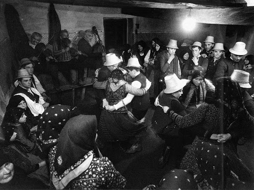
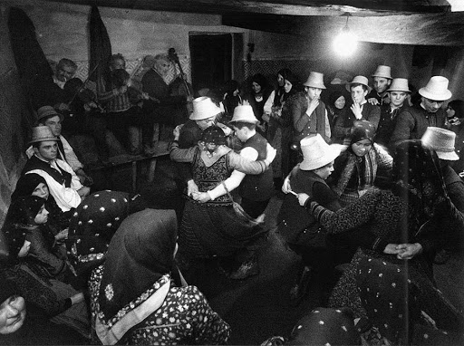

Background
Hungary has more than a 1,000 year history, since the arrival of the seven chieftans in the Carpathian Basin in 896. The main or leader chieftan was named Arpad, and his great great grandson, Stephen, became the first King of Hungary in the year 1000. Since then, the country has been through Mongol and Turkish invasions, Habsburg rule, revolutions, both World Wars, and Soviet oppression. Hungary was initially 125,642 square miles, with its borders being the Carpathian Mountains, but after WWI, the Treaty of Trianon reduced the country's size to just 35,936 square miles. This stranded many Hungarians outside of their country, where they were often banned from speaking Hungarian. Hungarian is a unique language from the Finno-Ugric language family, and no other countries around Hungary have any relationship to it. Today, there are only about 13 million speakers of the language, 10 million of which live in mainland Hungary.

 
